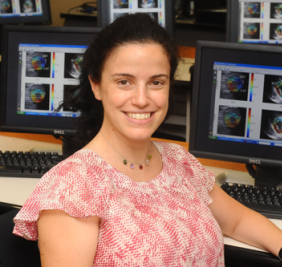

Dr. Konofagou received her B.Sc. (Licence) in Chemical Physics from Université de Pierre et Marie Curie, Paris VI in Paris, France and her M.Sc. at Imperial College of Physics, Engineering and Medicine in Biomedical Engineering in 1992 and 1993, respectively. In 1999, Dr. Konofagou received her Ph.D. from the University of Houston in Biomedical Engineering for her work in elastography at the University of Texas Medical School in Houston, TX and then pursued her postdoctoral work in elasticity-based monitoring of focused ultrasound therapy at Brigham and Women’s Hospital, an affiliate of Harvard Medical School in Boston, MA. Professor Konofagou is currently an Assistant Professor of Biomedical Engineering and Director of the Ultrasound and Elasticity Imaging Laboratory at Columbia University. She is also a member of the IEEE Ultrasonics, Ferroelectrics and Frequency Control, the Acoustical Society of America and the American Institute of Ultrasound in Medicine. Her main interests are in the development of novel elasticity imaging techniques and applications, and more notably, breast elastography, ligament elastography, myocardial elastography, harmonic motion imaging and focused ultrasound therapy with several close clinical collaborations in the Columbia Presbyterian Medical Center.